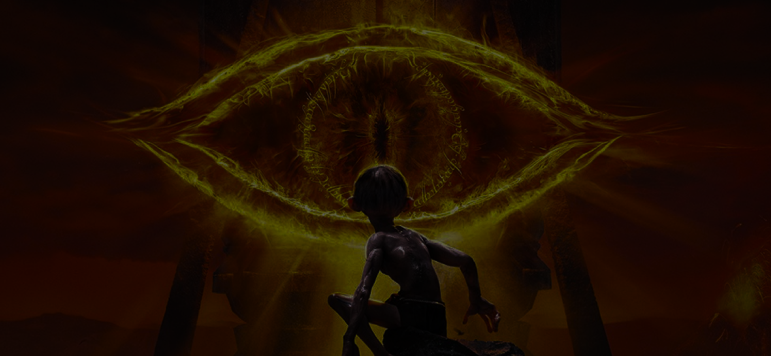
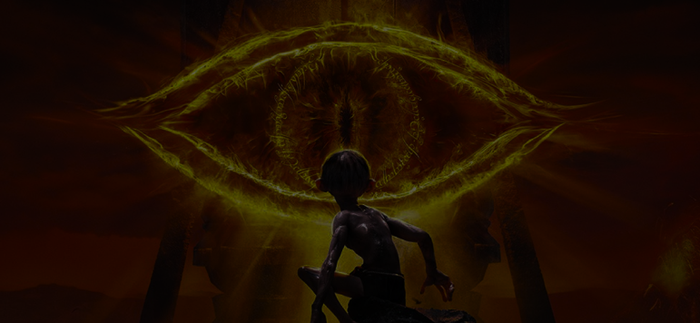
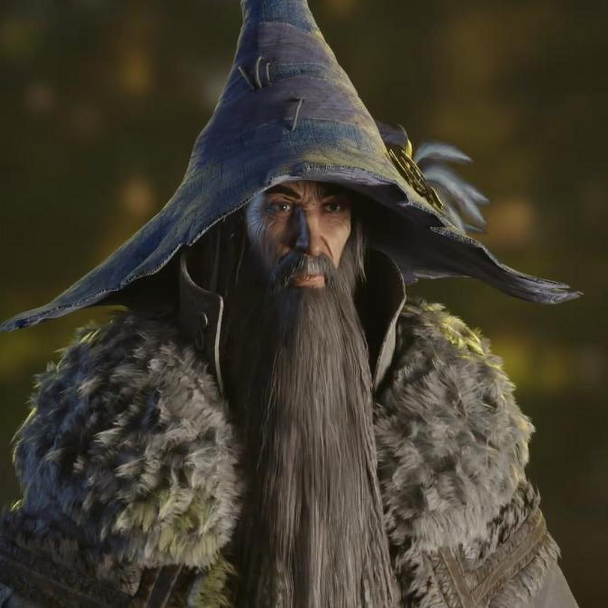
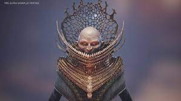
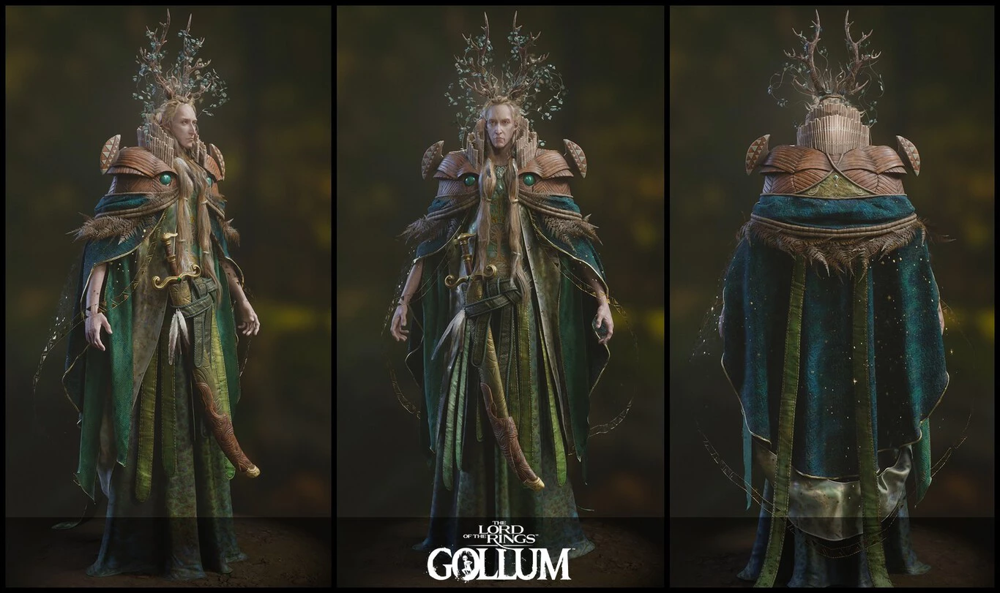
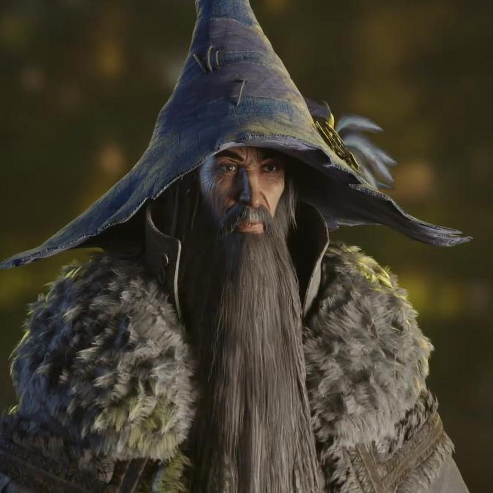
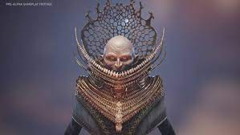
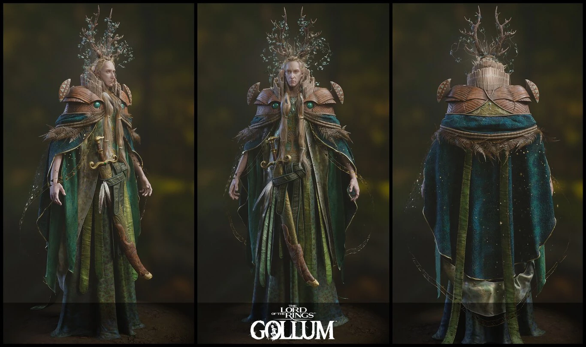

El Señor de los Anillos Gollum es una aventura de acción centrada en la historia.
Sobrevive y supera los desafíos del camino con sigilo, agilidad y astucia. Escala, salta y agárrate para sortear peligros o alcanzar posiciones favorables.
Aunque Gollum no sea un guerrero, es capaz de asesinar a enemigos descuidados cuando tiene la oportunidad, o de deshacerse de ellos por medios más creativos y ruines.
Las decisiones que tomes y la forma en la que juegues tienen un impacto directo en la personalidad de Gollum: siempre debatiéndose entre sus dos caras, Gollum y Sméagol, dependerá de ti decidir si el lado oscuro de Gollum toma el poder o si todavía queda un ápice de razón en lo que antaño fue Sméagol. Una mente, dos egos: ¡tú decides!


 




